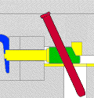
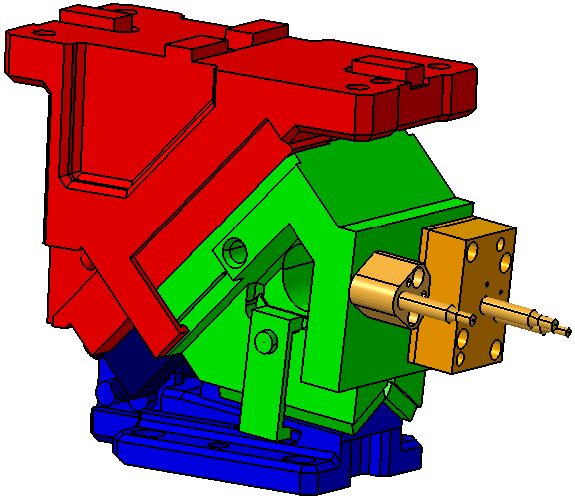
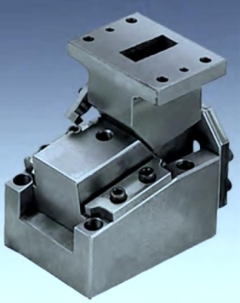
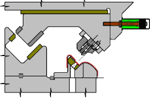
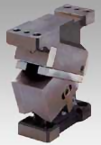
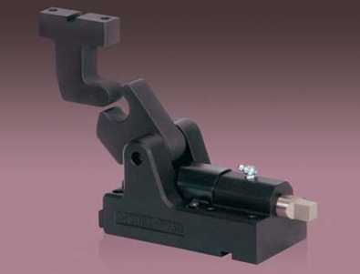
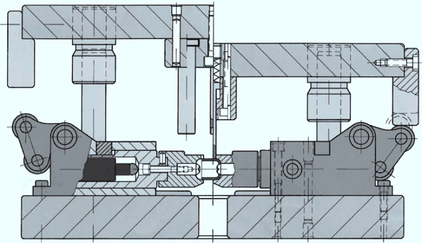

Bu çalýþmada kalýpçýlýk sektöründe çok fazla kullanýlan kamlý kalýplarýn, kam ünitelerinin çeþitleri ve nasýl kullanýldýklarý hakkýnda bilgi verilmiþtir. Kamlarýn açýlarý, kuvvetleri ve çalýþma yönleri detaylý bir þekilde açýklanmýþtýr.
Kalýpçýlýkta kam; sýrasý ile birbirine temas eden düzenekleri harekete geçirmeye yarayan bir mekanizmadýr.
Bu hareketler sayesinde, dik doðrultuda hareket eden presin kuvvetinden yararlanarak açýlý kesme ve bükmeler yapabiliyoruz. Kam çalýþma prensibi olarak dik doðrultuyu yatay doðrultuya dönüþtüren bir mekanizmadýr.
Kamlý plastik enjeksiyon kalýp animasyonu

Kamlý kalýplar hassas bir iþçilik gerektirmektedir. Ýmalatý normal kalýplara göre daha zordur. Kesme kalýplarýnda sacýn yüzeyine dik gelecek þekilde kesmelerin yapýlmasý önemlidir. Bu nedenle genellikle otomobil parçalarý için yapýlan kalýplarda kam kullanýlmasý zorunludur.
Bükme kalýplarýnda da bükülecek parçanýn doðrultusu 90º den farklý ise kam kullanmak zorundayýz.

Uçar kam
Uçar kam genel olarak açýlý yüzeyleri delme iþleminde kullanýlýr. Ancak uçar kamlarda diðer kamlardan farklý olarak iþlemi gerçekleþtirecek olan çelik üst gruba baðlýdýr. Bu nedenden dolayý sýyýrýcý plaka ile kamýn hareketi iyi analiz edilmelidir.
Bu konumlanma bütün kamýn hareketinin bir yere müdahale etmeden çalýþmasýna olanak saðlar. Uçar kamlar hemen hemen her açýda deliklerin delinmesine izin vermektedir.


Uçar kam tasarým örneði
Kamlarýn montajlý þekli
Kutu kamlar
Kutu kamlar özel olarak yapýlýrlar. Zýmbaya baðlý bir kol ile hareketi saðlayan bu kamlar içerisindeki yay sayesinde geri dönüþü tamamlarlar. Kalýp çalýþma eksenine dik ve maksimum 45 dereceye kadar kullanýlabilirler. Ýçerisindeki yayýn kýrýlma riskine karþý geri dönüþü de ayný kolla yaparlar. Kutu kamlarý, standart kamlara büyük bir alternatiftir ve mükemmel rehberlik saðlarlar.


Hidrolik kamlar
Hidrolik kamlar yeterli hareket alanýn olmadýðý yerlerde kullanýlýrlar. Bu kamlar, hidrolik sistem sayesinde küçük boyutlardadýrlar ve haznedeki yaðý presin kuvvetinden yararlanarak hareketli parçayý itmek için kullanýr.
Herhangi bir konumda yerleþtirilebilir. Hidrolik kamlar, delmek için kullanýlan kamlara iyi birer alternatiftir. Üniteleri düz bir yere sabitlenmelidir, 70º C'nin üzerinde çalýþmazlar...